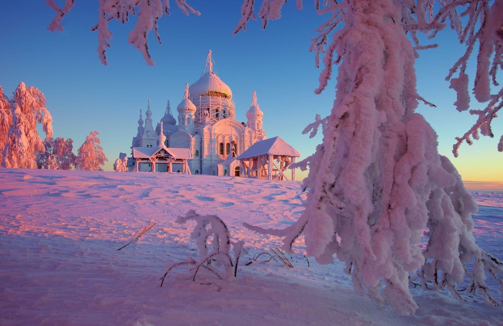
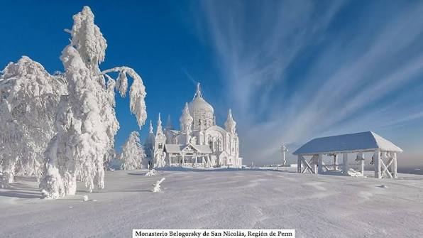

Rusia es un pais ubicado en Eurasia el cual tiene el honor de ser el pais con mayor cantidad de extension territorial en todo el planeta.
A su vez, la diversidad cultural en el territorio es inmensa al descubrir que conviven decenas de etnias de fe ortodoxa y musulmana. No solo eso sino que es un pais con mas de 190 grupos etnicos los cuales se concentran principalmente en republicas autonomas como Tartaristan, Daguestan, Baskortostan, Chechenia y Saja.
No obstante, pese a lo que se tiene pensado cuando te imaginas ciudades siberianas, al ver la capital, Moscu, podemos observar que las ciudades son muy modernas y organizadas, haciendo que sea una de las mas lindas y avanzadas de toda Europa.

Россия - священная наша держава,
Россия - любимая наша страна.
Могучая воля, великая слава -
Твое достоянье на все времена!
Славься, Отечество наше свободное,
Братских народов союз вековой,
Предками данная мудрость народная!
Славься, страна! Мы гордимся тобой!
От южных морей до полярного края
Раскинулись наши леса и поля.
Одна ты на свете! Одна ты такая -
Хранимая Богом родная земля!
Славься, Отечество наше свободное,
Братских народов союз вековой,
Предками данная мудрость народная!
Славься, страна! Мы гордимся тобой!
Широкий простор для мечты и для жизни
Грядущие нам открывают года.
Нам силу дает наша верность Отчизне.
Так было, так есть и так будет всегда!
Славься, Отечество наше свободное,
Братских народов союз вековой,
Предками данная мудрость народная!
Славься, страна! Мы гордимся тобой!

